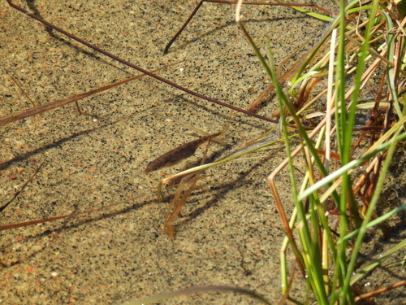

JTA’s scientific projects
Current projects
☀️ Open science
➡️ I have detailed my projects related to open science and DEI on the Committments page.
🔨 Tool use by fishes First postdoc
Project website: https://fishtooluse.com
Project instagram: https://www.instagram.com/fishtooluse/
I have been conducting a project on anvil use by fishes with Professor Culum Brown at the Fish Lab at Macquarie University (Sydney, Australia) since October 2022. It feels like an achievement to finally work on coral reef fish behaviour – my long-term goal – with the world expert on fish behaviour and cognition!
Almost nothing was known about this tool-use behaviour, so I have been collected observations using fieldwork and community science. We want to get basic knowledge of this behaviour, in addition to understand its evolutionary history and adaptive function. We also believe anvil use in fish is a good system for understanding the cognitive, ecological and morphological factors driving the evolution of tool use in animals.
We have a side project on social learning of tool use in a wrasse fish species, in collaboration with a team in New-Zealand. Cyndi-Lee Harrison-Burgess conducted a lab experiment during her master’s internship and found promising evidence of social learning!
So far, I have published one paper on a subset of observations in a group of fish called the New World Halichoeres (PDF available here). More papers are coming!
Opinion paper on transgenerational plasticity
I am currently writing an opinion piece on transgenerational plasticity. I keep seeing the same confusions around terms and the same two mistakes in lab experiment designs when peer-reviewing papers. Feel free to reach out if you would like to get involved!

A team has been faster than me at publishing a paper about the confusion around terms. However, they did not cover everything I want to bring forward in my article – so stay tuned!
Past projects
🦈 Migration patterns of Port-Jackson sharks Side project
I was fortunate to be involved in Loéva Martin-Podevin’s master’s project, helping with data analysis and manuscript drafting. Her task was to examine the migration patterns of Port-Jackson sharks along the southeastern coast of Australia using acoustic tag data, part of a long-term project at the Fish Lab.

Check the PDF here for more details on her findings.
🐠 Welfare housing of Betta fish Side project
It was a real pleasure working remotely with Naomi Clark-Shen to analyse her data on the behaviour of Siamese fighting Betta fish. Special thanks to Culum Brown for connecting us! Betta fish are among the most popular pet fish in the world, yet they are often housed in tiny, inadequate jars. By carefully monitoring their behaviour, she was able to show that better housing is needed for their welfare.

Check the PDF here to learn more, including advice for Betta fish care.
🐌 Characterising transgenerational plasticity PhD project
Some people say that you will eventually circle back to your PhD project at some point of your career, though I think it’s unlikely since I’m glad it’s behind me! This is probably because I had always wanted to work on fish behaviour and evolution, which I did end up doing for my PhD project. That said, I had two great supervisors – Émilien Luquet and Sandrine Plénet – with whom I always enjoy interacting, as I do with everyone in the LEHNA team.
I began my PhD project at Claude Bernard Lyon 1 University (France) with a 3-month internship in 2015 and officially started in September 2017. I completed it in April 2021. During this time, I conducted two lab experiments on tiny, cute freshwater snails over multiple generations, analysed three datasets from previous experiments, and wrote a literature review (PDF)!
The lab experiments followed a similar a similar design: We were exposing snails to predator odours and then measuring the resulting effects on their shell morphology and behaviour, along with transgenerational effects on their offspring. We repeated this experiment to identify factors influencing the presence, magnitude and direction of these transgenerational effects. The factors we characterised included the generation that was exposed (PDF), the parent exposed (PDF) and the timing of exposure during development (PDF). In the background, there was the aim of understanding how different environmental effects combine to shape the expression of anti-predator defences (PDF). My PhD thesis is available for download (here), though it’s written in French!

I was proud to apply my interest in and knowledge of animal personality to a project that examined whether parental exposure to predators caused snails to behave more similarly to or differently from one another (PDF). I also became involved in two side projects, both of which focused on transgenerational plasticity in Physa snails, of course! One explored the transgenerational effects at the level of gene expression (PDF); while the other investigated the maintenance of transgenerational plasticity after many lab generations, which is still waiting in Émilien’s computer.
As you may have noticed, four papers ended up being published in 2020, people often get confused when citing Tariel et al. 2020 – which I completely understand! 🤪
❤️ Mate copying in fish Master internship
Sabine Nöbel needed students to conduct experiments for her project, and here I came! She aimed to determine whether female mosquitofish and zebrafish copy the mate choice of other females, and whether their mate-copying capacity was linked to their personalities. I spent over 3 months at the Laboratoire Evolution et Diversité Biologique, at Paul Sabatier Toulouse III University (France), working under the supervision of Sabine and Etienne Danchin. You can find the results for both species in these publications: mosquitofish PDF, zebrafish PDF.

🐟 Transgenerational plasticity on personality Master internship
I cannot recommend this lab highly enough, where everyone is kind, down-to-earth, and excellent at research! This includes my two supervisors, Bart Adriaenssens and Neil Metcalfe, who supported me during my three-month internship in 2016 at the Institute of Biodiversity, Animal Health & Comparative Medicine at University of Glasgow (United Kingdow).

During the internship, I got to design my first-ever experiment from scratch to automatically track stickleback positions. Apart from the cameras, I built the entire experiment from bits, leftovers, and pieces I found in the gigantic university basement: it felt like a treasure hunt! I still need to publish this study – the data is sadly sitting on my computer.
🐣 Brood parasistim in fish Master internship
In Spring 2015, I had the privilege to meet and work with one of my favourite researchers, Giacomo Bernardi at the University of California, Santa Cruz (USA). I conducted molecular biology lab work in his lab near the sea, where the weather was a perfectly sunny 20-25°C every day.
There are only a handful of marine fish species that care for their newborn babies (though many care for their eggs), and two Altrichthys damselfish species are one of them. These fish stay with their babies in the same spot on the reef and ferociously protect them – and you know how bold and fierce a damselfish can be! Giacomo wanted to determine whether brood parasitism occurred in these species. Since the babies look very similar to each other, even between the two Altrichthys species, we used microsatellite DNA markers to determine whether parents were caring exclusively for their own offspring or for babies from other parents as well. Long story short, there was indeed brood parasitism! You can find more information in the PDF.

To keep me busy at the end of my internship, Giacomo had me prepare samples for RAD sequencing, which resulted in two great publications.
🔥 Recolonization processes of gorgonians Bachelor internship
My first research internship took place in a dream location: Marseille, during the summer of 2014, in a station less than a minute’s walk from a small beach and just a 15-minute bike ride from the ‘Vieux Port’ city centre. I worked at the Endoume station of the IMBE (Institut Méditerranéen de la Biodiversité et d’Écologie marine et continentale), which is part of Aix-Marseille University. I worked one and a half months at the station under the supervision of Didier Aurelle, whom I recommend highly as a supervisor.

The project focused on the recolonisation abilities of gorgonian corals, either on a new shipwreck or following mortality events caused by heat waves. We assessed this using microsatellite markers (PDF)